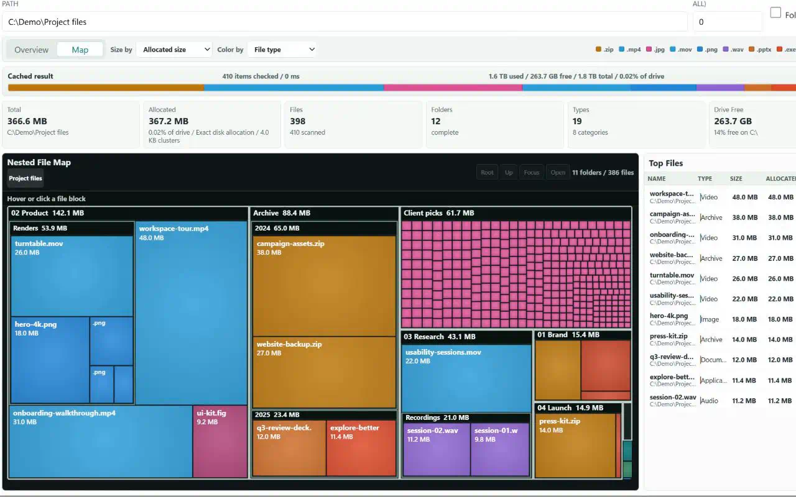

Nested treemap
Drill from broad folders into individual files while folder, extension, and top-file tables stay synchronized.
See the shape of the disk yourself, then let AI compare the evidence without handing it an unrestricted shell.

The native Windows provider reports logical bytes, allocated bytes, cluster size, and the accuracy source so sparse or compressed files are not mislabeled.
Drill from broad folders into individual files while folder, extension, and top-file tables stay synchronized.
Start analysis through MCP, poll progress, cancel quickly, and page results without materializing a huge volume in the client.
Group identical checksums, inspect locations, and prepare a deletion plan only after reviewing what is actually redundant.
The Analyzer and duplicate tools are read-only. Cleanup requires a separate write-enabled profile, a current plan, and explicit apply.